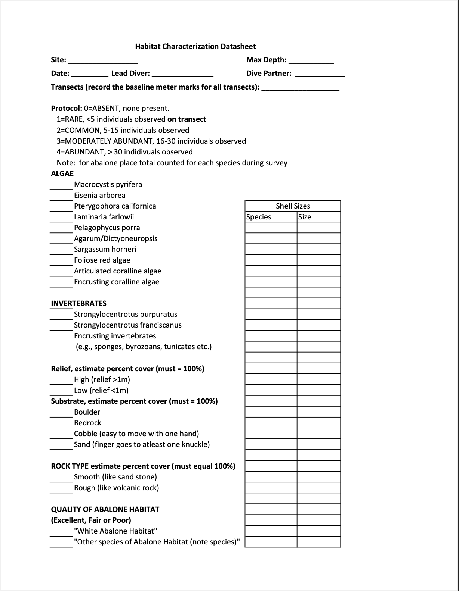

Resources
Going diving?
Here’s how you can help positively ID white abalone!
Click on the dropdown below to navigate to different resources
Wanted Alive Poster

Abalone Comparative ID Card

Compartive images of the five subtidal abalone species found in the Southern California Bight
Habitat Characterization Data Sheet

Habitat Characterization Data Sheet
Each dive team completes a habitat data sheet topside, after the dive team exits the water. It is not necessary for the data sheet to be carried by the divers during the dive. The purpose of this data sheet is to provide a qualitative characterization of some of the more important features of the habitat. The habitat data sheet references the scoring protocols for each of the categories: algae, invertebrates, relief, substrate, rock type, and quality of abalone habitat. The last of these is a subjective assessment based on the experience of the diver. Empty shells seen during the dive should be noted on this data sheet as well.
Please upload your completed habit characterization data sheet along with your abalone field observation
Need help identifying the species on the habitat characterization sheet? Click here to download the habitat characterization species identification guide.